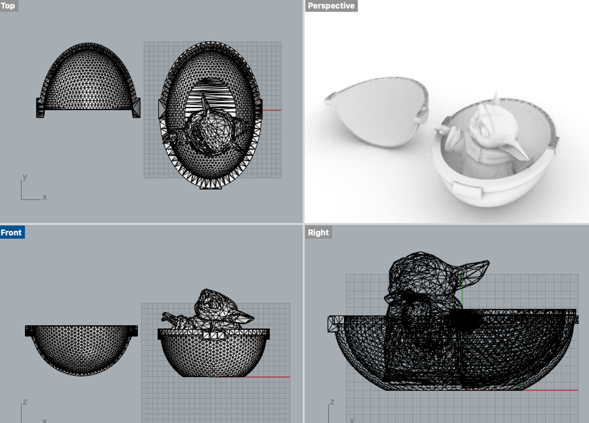

Baby Yoda Mesh
For this project, I wanted to do something with baby yoda for my 3-year-old nephew. Last week when I was video chatting them, I showed him my nested object printing. He wasn’t very impressed by dishes so when I asked what he prefer I make he said baby yoda, so were we are. I chose a low poly object because he can be very detailed. Also for the sake of the assignment and combining STL files, I found the bassinet crib he goes in as well. Click pictures for thingiverse pages:
When I imported them, relative to each other I was happy with their scales. The longest dimension of the crib however is 150mm so I am just going to scale it down in Cura when everything is said and done.
First for the Yoda, I wanted to get rid of his feet/toes details since they keep sticking out of the bassinet and they won’t really be necessary for the print.
Once I deleted the points I needed to delete, I manually tried to stitch together some mesh points as much as I could to close the gaps. I still ended up needing to check and repair mesh to close everything up. Ultimately I used fill mesh holes command to patch it up.
At this point, the models would likely export fine as an STL in I did a mesh boolean union, but because of the cantilevered design of the bassinet cover it would require lots of printed support. This in turn means a much higher print time (estimated at 18 hours) and it would be a pain to dig out from underneath. So I wanted to cut off the top of the bassinet to have it be a separate object that prints in order to assemble it after.
Once I did the mesh split, I filled the mesh holes on both parts of the bassinet. I also rotated the top part 180 degrees so there is less structure needed on the inside of the concaved portion. Then I put baby yoda in the bassinet and did a mesh boolean union on him and the bottom bassinet.
After scaling the model imported to about 60%, the new print is estimated to take about 6 hours to print!

Files: